Chap 4 - Templates et Customisation
Dans le chapitre précédent nous avons installé Ionic et ses dépendances. Nous avons également pu créer notre application Duckcoin et nous nous sommes amusés à le modifier tant bien que mal.
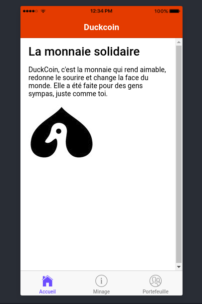
Dans ce chapitre, nous allons apprendre à customiser un peu plus notre application mobile et à créer de nouvelles pages.
Customisation
Attributs de style
Ionic met à disposition un ensemble d'attributs utilitaires qui peuvent être utilisés sur n'importe quel élément afin de modifier du texte, le centrer par exemple, ou encore gérer les marges. A la différence de Bootstrap où on fait usage de classes css (row, col,...), ici on utilisera plutôt des attributs.
| Attribut | Style CSS correspondant | Description |
|---|---|---|
| text-left | text-align: left | Aligne du texte à gauche |
| text-right | text-align:right | Aligne du texte à droite |
| text-start | text-align:start | Identique à text-left si la direction d'écriture va de gauche vers la droite et text-right si la direction est de droite vers la gauche. |
| text-end | text-align:end | Identique à text-right si la direction d'écriture est de gauche vers la droite et de text-left si la direction est de droite vers la gauche. |
| text-center | text-align:center | Centre le contenu |
| text-justify | text-align:justify | Justfie le contenu |
Une liste beaucoup plus exhaustive se trouve dans la documentation qui est extrêmement bien faite https://ionicframework.com/docs/theming/css-utilities/
On va pouvoir utiliser ces attributs directement dans nos pages. Centrons par exemple le h2 de la page d'accueil et justifions le contenu du texte qui le suit :
src/pages/home/home.html
<ion-header>
<ion-navbar color="duckcoin">
<ion-title>Duckcoin</ion-title>
</ion-navbar>
</ion-header>
<ion-content padding>
<h2 text-center>La monnaie solidaire</h2> <!-- ICI -->
<p text-justify> <!-- Et Là -->
DuckCoin, c'est la monnaie qui rend aimable, redonne le sourire et change la face du monde.
Elle a été faite pour des gens sympas, juste comme toi.
</p>
...
</ion-content>
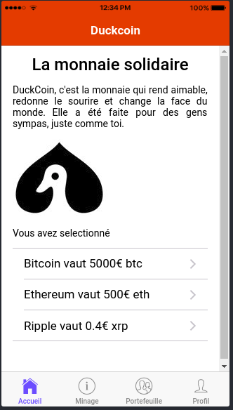
Grille CSS responsive
Ionic propose également un système de grille css pour permettre une meilleur gestion de blocs de contenus. Il est assez similiare dans sa syntaxe à celui que propose Bootstrap.
<h2>Profil utilisateur</h2>
<ion-grid>
<ion-row>
<ion-col col-lg-1>
<img src="assets/imgs/logo.jpg"/>
</ion-col>
<ion-col>
Charles E.
</ion-col>
<ion-col>
Développeur Web et Mobile
</ion-col>
</ion-row>
<ion-row>
<ion-col>
Intérêt pour la finance, la blockchain, les technologies mobiles et le O'tacos
</ion-col>
</ion-row>
</ion-grid>
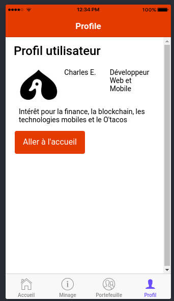
Pour plus de détails, merci de consulter la documentation correspondante : https://ionicframework.com/docs/theming/responsive-grid/
Utilisation de SASS
Ionic est construit sur Sass (Syntactically Awesome Stylesheets), un langage de génération de feuilles de style, robuste et facile à prendre en main. En fait si vous savez déjà définir une feuille de style, ce langage ne vous choquera pas trop. Grâce à cette technologie embarquée dans Ionic, nous allons non seulement pouvoir définir des styles génériques pour notre application, qui pourront être utilisé à plusieurs endroits différents, mais nous pourrons également changer les styles par défaut des attributs et composants Ionic.
La définition ou la redéfinition de style css dynamique se fait depuis le fichier src/theme/variables.scss :
// Named Color Variables
// --------------------------------------------------
// Named colors makes it easy to reuse colors on various components.
// It's highly recommended to change the default colors
// to match your app's branding. Ionic uses a Sass map of
// colors so you can add, rename and remove colors as needed.
// The "primary" color is the only required color in the map.
$colors: (
primary: #488aff,
secondary: #32db64,
danger: #f53d3d,
light: #f4f4f4,
dark: #222,
duckcoin: #df4932 // Notre première valeur SASS
);
Vous pouvez ici effectuer des changements sur les valeurs par défaut des thèmes primaire, secondaire, ...Et ils s'appliqueront automatiquement à l'ensemble de vos composants.
<ion-header>
<ion-navbar color="duckcoin">
<ion-title>Duckcoin</ion-title>
</ion-navbar>
</ion-header>
Ici la barre de navigation aura comme couleur de fond (background) celle définie dans le fichier de variables scss et comme couleur de texte du blanc. Si vous voulez autre chose que du blanc, disons du jaune, vous devriez modifier votre style comme ceci :
src/theme/variables.scss
$colors: (
primary: #488aff,
secondary: #32db64,
danger: #f53d3d,
light: #f4f4f4,
dark: #222,
duckcoin: (
base: #df4932,
contrast: yellow
)
);
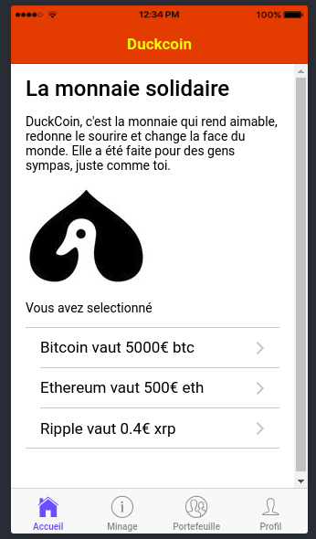
Il est également possible d'appeler des variables définis dans ce fichier src/theme/variables.scss directement dans nos fichiers scss. Changeons par exemple la couleur du bouton présent dans l'onglet Profil :
src/pages/profile/profile.scss
page-profile {
button[ion-button] {
background: color($colors, duckcoin, base);
}
}
qui est l'équivalent css de :
page-profile {
button[ion-button] {
background: #df4932;
}
}
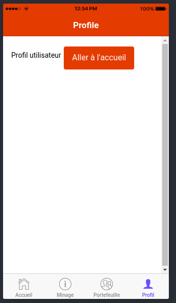
De manière générale, les Variables Sass vous permettent de définir une valeur une fois, puis de l'utiliser à plusieurs endroits différents. Une variable commence toujours par un signe dollar ($) et est initialisé comme une propriété CSS classique.
Suppossons par exemple que l'on souhaiterait imposer une largeur maximale sur un certain nombre de composants de notre application (des images, boutons,...). On pourrait par exemple faire ceci dans le fichier variables.css :
src/theme/variables.scss
$max-width: 400px;
Puis dans une ou plusieurs feuilles de style scss invoquer notre variable :
div {
width:$max-width;
}
On pourrait même faire des calculs sur la variable :
img {
width : $max-width/10;
}
Templates et création de nouvelles pages
Racine de toutes les pages
Considérons le fichier src/app/app.html, c'est à partir de ce fichier que sera rendu toutes les autres pages.
<ion-nav [root]="rootPage"></ion-nav>
On y définit un paramètre rootPage qui sera en fait le composant à afficher par défaut, une sorte d'index. Ce paramètre rootPage est lui-même déclaré dans le fichier app.component.ts.
import { Component } from '@angular/core';
import { Platform } from 'ionic-angular';
import { StatusBar } from '@ionic-native/status-bar';
import { SplashScreen } from '@ionic-native/splash-screen';
import { TabsPage } from '../pages/tabs/tabs';
@Component({
templateUrl: 'app.html'
})
export class MyApp {
rootPage:any = TabsPage; // <!-- ICI
constructor(platform: Platform, statusBar: StatusBar, splashScreen: SplashScreen) {
platform.ready().then(() => {
// Okay, so the platform is ready and our plugins are available.
// Here you can do any higher level native things you might need.
statusBar.styleDefault();
splashScreen.hide();
});
}
}
On pourrait tout à fait remplacer le rootPage par une autre page, la page de Minage par exemple.
import { Component } from '@angular/core';
import { Platform } from 'ionic-angular';
import { StatusBar } from '@ionic-native/status-bar';
import { SplashScreen } from '@ionic-native/splash-screen';
import { TabsPage } from '../pages/tabs/tabs';
import { MiningPage } from '../pages/mining/mining'; // <!-- ICI
@Component({
templateUrl: 'app.html'
})
export class MyApp {
rootPage :any = MiningPage; // <!-- et LÀ
constructor(platform: Platform, statusBar: StatusBar, splashScreen: SplashScreen) {
platform.ready().then(() => {
// Okay, so the platform is ready and our plugins are available.
// Here you can do any higher level native things you might need.
statusBar.styleDefault();
splashScreen.hide();
});
}
}
Ce qui ferait que par défaut, lorsque votre application se lancera on aura par défaut cette page de Minage au lieu de la page affichant des onglets.
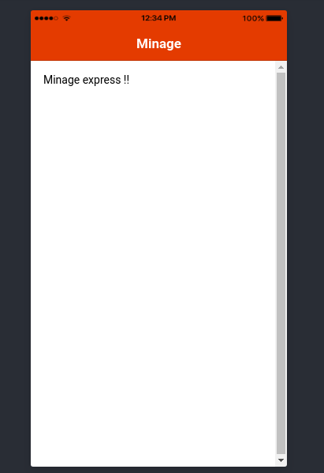
Création d'une nouvelle page
Pour créer une nouvelle page, il vous suffit de saisir la commande ionic g page LeNomDeLaPage :
$ ionic g page Profile
[OK] Generated a page named Profile!
Dans cet exemple, j'ai créé une nouvelle page pour afficher un profil utilisateur. Cette commande m'a automatiquement générer le triplet : fichier .ts + fichier .html + fichier .scss.
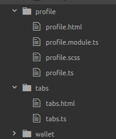
profile.ts
import { Component } from '@angular/core';
import { IonicPage, NavController, NavParams } from 'ionic-angular';
/**
* Generated class for the ProfilePage page.
*
* See https://ionicframework.com/docs/components/#navigation for more info on
* Ionic pages and navigation.
*/
@IonicPage()
@Component({
selector: 'page-profile',
templateUrl: 'profile.html',
})
export class ProfilePage {
constructor(public navCtrl: NavController, public navParams: NavParams) {
}
ionViewDidLoad() {
console.log('ionViewDidLoad ProfilePage');
}
}
profile.html
<!--
Generated template for the ProfilePage page.
See http://ionicframework.com/docs/components/#navigation for more info on
Ionic pages and navigation.
-->
<ion-header>
<ion-navbar>
<ion-title>Profile</ion-title>
</ion-navbar>
</ion-header>
<ion-content padding>
</ion-content>
profile.scss
page-profile {
}
Ajoutons à présent cette nouvelle page à notre système d'onglet comme ceci :
src/pages/tabs/tabs.ts
import { Component } from '@angular/core';
import { MiningPage } from '../mining/mining';
import { WalletPage } from '../wallet/wallet';
import { HomePage } from '../home/home';
import { ProfilePage } from '../profile/profile'; // On importe la nouvelle page ICI
@Component({
templateUrl: 'tabs.html'
})
export class TabsPage {
tab1Root = HomePage;
tab2Root = MiningPage;
tab3Root = WalletPage;
tab4Root = ProfilePage; // On créé le nouvel onglet
constructor() {
}
}
src/pages/tabs/tabs.html
<ion-tabs>
<ion-tab [root]="tab1Root" tabTitle="Accueil" tabIcon="home"></ion-tab>
<ion-tab [root]="tab2Root" tabTitle="Minage" tabIcon="information-circle"></ion-tab>
<ion-tab [root]="tab3Root" tabTitle="Portefeuille" tabIcon="contacts"></ion-tab>
<!-- Affichage du nouvel onglet -->
<ion-tab [root]="tab4Root" tabTitle="Profil" tabIcon="person"></ion-tab>
</ion-tabs>
Il faut ensuite déclarer cette nouvelle page dans le module principale, pour que la communauté des pages puissent le connaitre et pouvoir eventuellement l'appeler si besoin. Pour cela, il vous faut modifier le fichier src/app/app.module.ts de la manière suivante :
import { NgModule, ErrorHandler } from '@angular/core';
import { BrowserModule } from '@angular/platform-browser';
import { IonicApp, IonicModule, IonicErrorHandler } from 'ionic-angular';
import { MyApp } from './app.component';
import { MiningPage } from '../pages/mining/mining';
import { WalletPage } from '../pages/wallet/wallet';
import { HomePage } from '../pages/home/home';
import { ProfilePage } from '../pages/profile/profile'; // On importe la nouvelle page ICI
import { TabsPage } from '../pages/tabs/tabs';
import { StatusBar } from '@ionic-native/status-bar';
import { SplashScreen } from '@ionic-native/splash-screen';
@NgModule({
declarations: [
MyApp,
MiningPage,
WalletPage,
HomePage,
ProfilePage, // On la déclare ici
TabsPage
],
imports: [
BrowserModule,
IonicModule.forRoot(MyApp)
],
bootstrap: [IonicApp],
entryComponents: [
MyApp,
MiningPage,
WalletPage,
HomePage,
ProfilePage, // Et là
TabsPage
],
providers: [
StatusBar,
SplashScreen,
{provide: ErrorHandler, useClass: IonicErrorHandler}
]
})
export class AppModule {}
Après enregistrement vous devriez voir ceci s'afficher à présent :
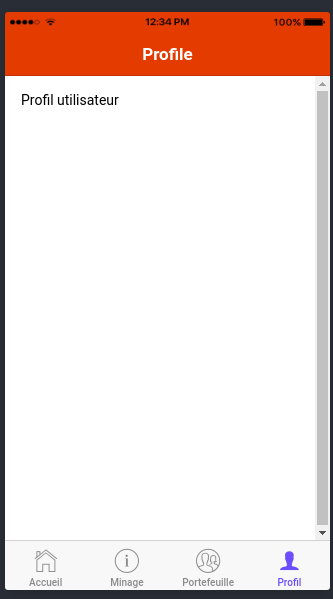
Navigation entre différentes pages
Pour passer d'une page, par exemple de la page de Profil, à la page d'accueil par exemple, on utilise ce que l'on appelle le controleur de navigation (NavController), que vous avez du voir apparaitre dans chaque page.
src/pages/profile/profile.ts
import { Component } from '@angular/core';
import { IonicPage, NavController, NavParams } from 'ionic-angular'; // ICI
@IonicPage()
@Component({
selector: 'page-profile',
templateUrl: 'profile.html',
})
export class ProfilePage {
constructor(public navCtrl: NavController, public navParams: NavParams) { // Et là
}
ionViewDidLoad() {
console.log('ionViewDidLoad ProfilePage');
}
}
Dans ce fichier, ajoutez la fonction gotoHome suivante :
import { Component } from '@angular/core';
import { IonicPage, NavController, NavParams } from 'ionic-angular'; // ICI
import { HomePage } from '../home/home'; // On importe la Page d'accueil
@IonicPage()
@Component({
selector: 'page-profile',
templateUrl: 'profile.html',
})
export class ProfilePage {
constructor(public navCtrl: NavController, public navParams: NavParams) { // Et là
}
ionViewDidLoad() {
console.log('ionViewDidLoad ProfilePage');
}
/**
** Cette fonction permet d'aller à la page d'accueil
**/
gotoHome() {
this.navCtrl.push(HomePage, {
un_parametre: 'Je suis un paramètre'
});
}
}
Puis, modifions un peu le fichier src/pages/profile/profile.ts pour afficher un bouton qui nous permettra d'appeller cette action :
<ion-header>
<ion-navbar color="duckcoin">
<ion-title>Profile</ion-title>
</ion-navbar>
</ion-header>
<ion-content padding>
Profil utilisateur
<button ion-button (click)="gotoHome()">Aller à l'accueil</button>
</ion-content>
Qui donne le résultat suivant :
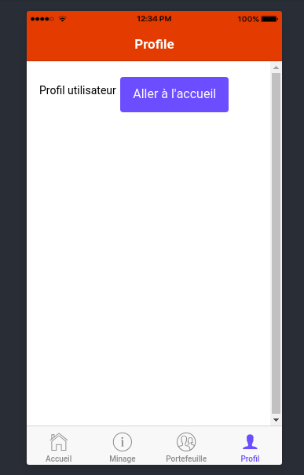 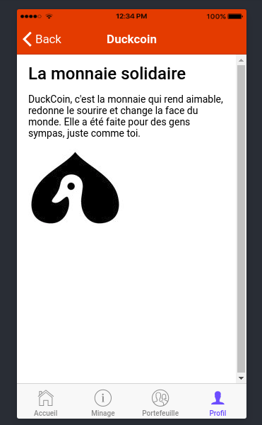
L'élement button fait partie des composants que propose Ionic. Dans le chapitre suivant, nous ferons le tour de ces principaux composants et apprendrons à la customiser.
Exercez-vous
1) Créez la page Profile précédente et configurez là pour quelle soit dans le thème de l'application. Corrigez les bugs eventuels.
2) Dan la fonction gotoHome, remplacez "push" par "pop" : this.navCtrl.pop. Que constatez-vous ?
3) Editez le fichier app.module.ts de la manière suivante :
...
@NgModule({
declarations: [
MyApp,
MiningPage,
WalletPage,
HomePage,
ProfilePage, // On la déclare ici
TabsPage
],
imports: [
BrowserModule,
IonicModule.forRoot(MyApp,{
tabsPlacement: 'top',
backButtonText: 'Retour'
})
],
...
Que remarquez-vous ?
4) Allez à l'adresse suivante : https://ionicframework.com/docs/components
Comment à partir des informations qu'y s'y trouve peut-on rajouter une liste d'éléments en page d'accueil (voir screen suivant)
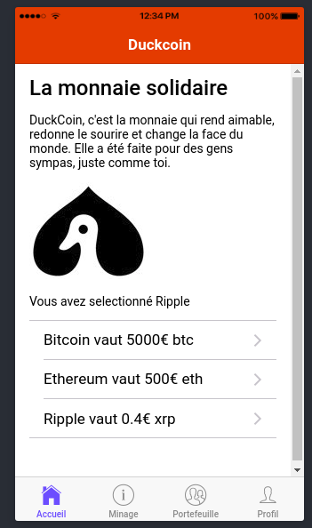
Astuces :
export class HomePage {
selected : any = '';
items : any = [];
constructor(public navCtrl: NavController) {
this.items = [
{'title':'Bitcoin', 'currency':'btc', 'price':'5000€'},
{'title':'Ethereum', 'currency':'eth', 'price':'500€'},
{'title':'Ripple', 'currency':'xrp', 'price':'0.4€'}
];
}
itemSelected(item) {
this.selected =item;
}
}
5) Testez d'autres composants
6) Créez une page Setting et ajoutez à cette page un formulaire avec des elements simples : nom, prenom, adresse,...